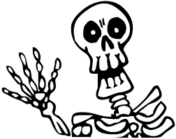
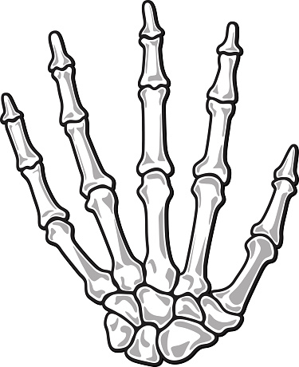
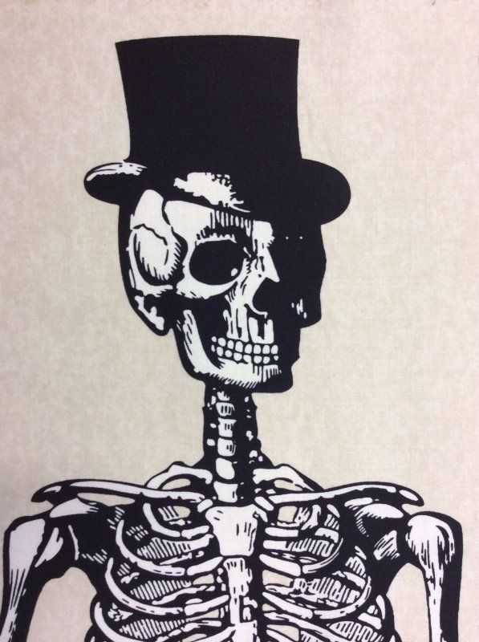

A csontváz (latinul sceletum) tapadási helyet biztosít és megtartja a gerincesek izmait. Passzívan részt vesz a mozgásban, fontos szerepe van a vérképzésben is. Védi a belső szerveket. A csontokkal foglalkozó tudományt oszteológiának nevezzük.A felnőtt emberi csontváz körülbelül 206 darab csontból áll. Az újszülöttnek 270 csontja van. A csontok száma a születés után még növekszik (osszifikáció), a serdülőkor során azonban a csontok száma csökken, ahogy bizonyos csontok egybeolvadnak. Előfordul, hogy valakinek 1-2 darabbal több vagy kevesebb csontja van, ez az életkortól és genetikai tényezőktől is függ. Pár kivétellel mindegyik csont páros. A csontok között megkülönböztetünk csöves, lapos és szabálytalan alakú csontokat. A csontok között ízületes vagy folyamatos( varratos, összenövéses, porcos)kapcsolat van. A csontok rugalmasak, de szilárdak. Lényegében minden csont egy-egy szervnek tekinthető, aminek megvan a szerepe a csontváz rendszerébe
A csontok csoportosítása

A vázizmok összehúzódó képességgel felruházott, vörhenyes, elernyedt állapotban lágy képződmények, melyeknek összessége a gerinces állatok testének legtömegesebb részét teszi ki, az embernél körülbelül 45%-ot (20 kilót), azt, amit a közéletben húsnak neveznek. Alak szerint lehetnek orsó alakú, lapos, körkörös izmok. A vázizmok, mint aktív mozgató szervek a csontokra hatnak, azokat egymáshoz közelítik vagy távolítják; azonkívül előfordulnak az érzékszervekben, (külső szemizmok) zsigerekben (garat- és gégeizmok), testüregek falát alkothatják (bordaközi izmok, hasizmok, medencefenék izmai), ill. egymástól elhatárolhatnak (rekeszizom) Élő állapotban lágyak, hajlékonyak és jelentékenyen nyújthatók, pirosak, ami részint a vértartalomtól, Magadon is kitapinthatod, hogy a koponya csontjai lapos, nagy csontok, a sípcsont viszont hosszú, hengeres csont. A kezedben az ujjak két vagy három rövid csontból állnak, a kézfejet pedig öt hosszabb csont alkotja. Alakjuk szerint csöves, lapos és szabálytalan csontok csoportjait különböztetjük meg. Végtagjaink vázát jellegzetes csöves csontok alkotják. A koponya csontjai, a mellcsont vagy a medencecsont lapos csontok. A gerincoszlop csigolyái a szabálytalan csontok közé tartoznak
A csontok felépítése

A csontok szerkezetük miatt aránylag könnyűek, ugyanakkor nagy teherbírásúak. Kívülről egy erős kötőszövetes hártya, a csonthártya burkolja be, védi, táplálja a csontokat, amely erekben, idegekben igen gazdag. A csonthártyából erek lépnek be a csont belsejébe, viszik a sejtekhez a tápanyagokat és az oxigént, és elszállítják tőlük az anyagcsere végtermékeit. A csonthártya a csontok vastagodásában és a sérülések utáni helyreállításban, a regenerációban is fontos szerepet játszik. Belső rétegében csontépítő sejtek vannak. A csonthártya csak ott nem burkolja a csontokat, ahol azok egy másik csonthoz kapcsolódnak.
A csonthártya alatt a csontok külső rétegét a tömör csontállomány alkotja, belül pedig a szivacsos állomány található (2. ábra). A tömör csontállomány nagy teherbírású, csontegységei úgy rendeződnek egymás mellé, mint az oszlopok. A szivacsos állomány csontlemezekből áll. A lemezek közeit vérképző szerv, a vörös csontvelő tölti ki. Ez a felépítés a lapos és a szabálytalan csontokra teljes mértékben jellemző. A végtagok hosszú, csöves csontjainak szerkezete abban tér el, hogy a csont középső, hosszú részén, a belsejében nem található szivacsos állomány.
A megvastagodott tömör csontállomány velőüreget zár körül, belsejét a sárga csontvelő tölti ki. Ez sok zsírszövetet tartalmaz, tápanyagraktárként funkcionál. Vörös csontvelő csak a csöves csontok két végében van.
A csontszövet

A csontok élő szervek. Legnagyobb részüket a támasztószövetek egyike, a csontszövet teszi ki. A nyúlványos csontsejtek vérerekkel tartanak kapcsolatot, anyagokat vesznek fel és adnak le. A vérerekkel való kapcsolat miatt a csontsejtek anyagcseréje elég gyors. Ez a magyarázata annak, hogy a csontok jól regenerálódnak, törés vagy repedés után kiválóan gyógyulnak. A szövet sejtjei között erős, fehérjékből álló rostkötegek húzódnak, köréjük az alapállományba szervetlen kalcium- és magnéziumsók rakódnak. A csontokat a szervetlen anyagok teszik erőssé és keménnyé, a rugalmasságuk pedig a szerves anyagoknak köszönhető.A legnagyobb fizikai terhelésnek kitett helyeken csontösszenövések találhatók. Az ember medencecsontja például három csontból nőtt össze, a keresztcsontot öt csigolya alkotja. Az összenövésekben a csontok egyáltalán nem tudnak egymáshoz képest elmozdulni.
A porcos összeköttetés már megenged némi mozgást. A gerincoszlop csigolyái közötti porckorongokon a csigolyák minden irányban elmozdulhatnak. Két csigolya egymáshoz képest nagyon kicsit mozdulhat el, de a sok csigolya miatt ezek a kis elmozdulások összeadódnak, így a gerinc nagy ívű mozgásokat végezhet (3. ábra). A bordákat és a szegycsontot szintén porcos kapcsolat tartja össze. A csontok elmozdulása a belégzés és a kilégzés folyamatában, a mellkas tágításában és szűkítésében vesz részt.
A koponya csontjait kacskaringós varratok kötik össze egymással. Ahol a két csont összeér, közöttük kötőszövet található. A varratok a csontok egészen minimális elmozdulását teszik lehetővé, alig többet, mintha össze volnának nőve.